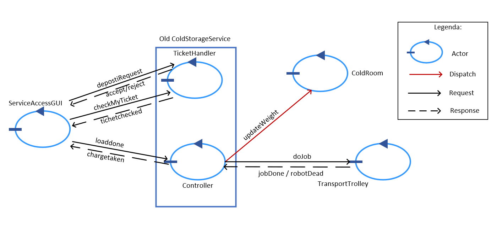
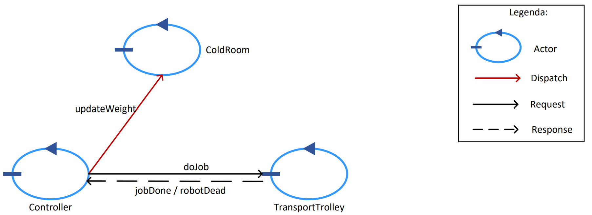
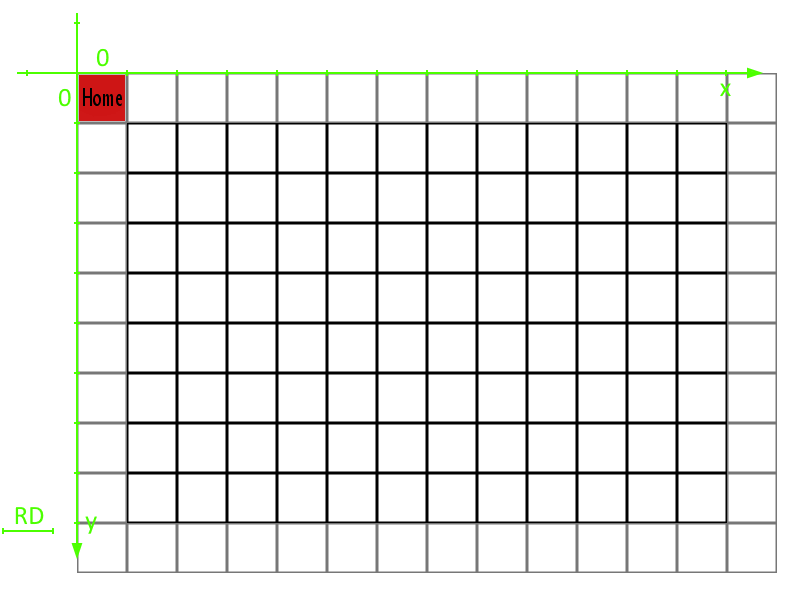
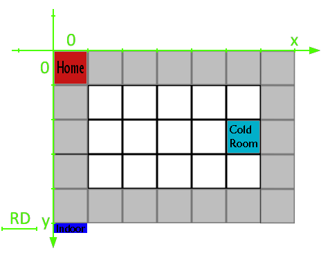

Modello dello sprint precedente.
ColdStorageService è un componente caratterizzato da troppe responsabilità, l'analista ritiene opportuno suddividerlo in 2 attori:
- Controller: si occupa di gestire il robot ed aggiornare il peso di ColdRoom.
- TicketHandler: si occupa di gestire il ciclo di vita dei Ticket.
Nello sprint corrente ci occuperemo solo del Controller. La logica di gestione dei ticket è rimandata allo sprint successivo (Sprint 1.1 - V3)
Cerchiamo quindi di realizzare solo la parte corrispondente a Controller, ColdRoom e TransportTrolley della seguente Architettura logica:

Ovvero la seguente:

Introduciamo un nuovo messaggio "doJob" di tipo Req/Res inviato dal controller.
Request doJob : doJob(KG)
Reply jobdone : jobdone(NO_PARAM)
Reply robotDead : robotDead(NO_PARAM)
ATTENZIONE: la risposta deve essere inviata appena il carico è rilasciato nella ColdRoom e non quando il robot torna alla home per requisiti.
Se il servizio è andato a buon fine e viene restituita una "jobdone" allora il Controller aggiorna il peso della ColdRoom tramite Dispatch.
Dispatch updateWeight : updateWeight(PESO)
Dalla documentazione fornita è chiaro che il basicRobot non possa ricevere il comando "doJob".
Risulta necessario aggiungere un componente intermedio che traduca la "doJob" in una serie di comandi, TransportTrolley si occuperà di quello.
Allo stesso modo è anche evidente la mancanza di un comando per caricare e scaricare i materiali trattati in basicRobot, non sarebbe quindi sufficiente in un caso reale.
Per definire la posizione del TransportTrolley e permettere il movimento autonomo dividiamo la stanza in una griglia di quadrati di lato RD (lunghezza del DDR robot).
La Home corrisponderà all'origine (0, 0). Useremo coordinate crescenti verso il basso e verso destra.

Date le dimensioni dell'area, Service Area sarà divisa in una griglia 4 x 6.
ColdRoom si troverà in posizione (5, 2).
Il TransportTrolley fornito possiede già il supporto a questo tipo di tecnologia. La mappatura della stanza deve essere fatta a priori e fornita tramite file all'avvio.
Dopo discussioni con il committente è stato decretato che il peso da scaricare non sarà mai maggiore del peso trasportabile del robot fisico.

Durante la fase di testing dovranno essere verificati i seguenti casi:
Codice primo test: TestService
Sia RD l'unità di misura
Home = (0, 0)
Indoor = (0, 4)
ColdRoom = (5, 2)
ColdRoomPORT = (5, 3) # posizione del robot per poter scaricare
Service Area = {
height = 5 # asse x (0 -> 4)
lenght = 7 # asse y (0 -> 6)
}

System coldstorage
//-----------------------------------------------------------------------
Request doJob : doJob(KG)
Reply jobdone : jobdone(NO_PARAM) for doJob
Reply robotDead : robotDead(NO_PARAM) for doJob
Dispatch updateWeight : updateWeight(PESO)
//-----------------------------------------------------------------------
Context ctxcoldstoragearea ip [host="localhost" port=8040]
//-----------------------------------------------------------------------
NOTA: in questo momento ColdRoom è definita nello stesso contesto di Controller, in futuro potrebbe non essere così (dipende dall'implementazione fisica della ColdRoom).
| Lisa Innocenti Uccini | Luca Lombardi | Giacomo Romanini |
|---|---|---|
 |
 |
 |
| github: LisaIU00 | github: Lombax99 | github: RedDuality |